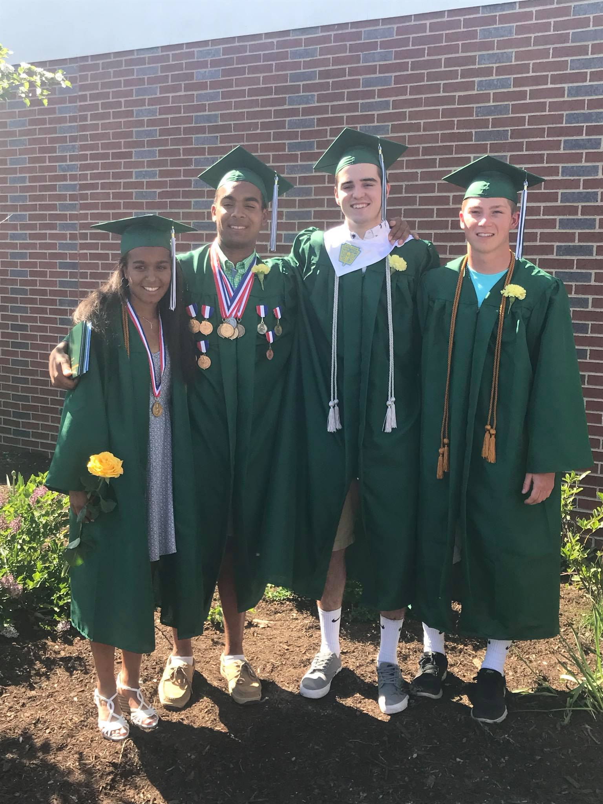

Growing up on MDI there wasn't a lot of options for work. It was either working in a summer shop, or lobstering. However I was lucky enough to have a friend named Drew Rich who owned his own lobster boat. The hours for lobstering were very important for my summers. I woke up at 4:30am to get on the boat and start hauling traps by 5-5:30. We would haul until eleven or noon. This allowed me to have a ton of free time in the afternoons to hang out with friends.
For school, I attended Pemetic for both elementary and Middle school. Then I went on to MDI for Highschool. Now I'm attending UMO as a business student.